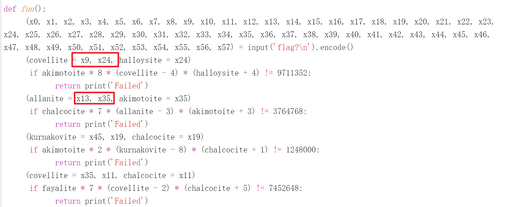
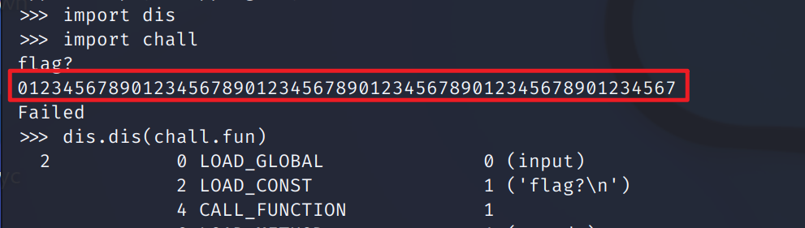
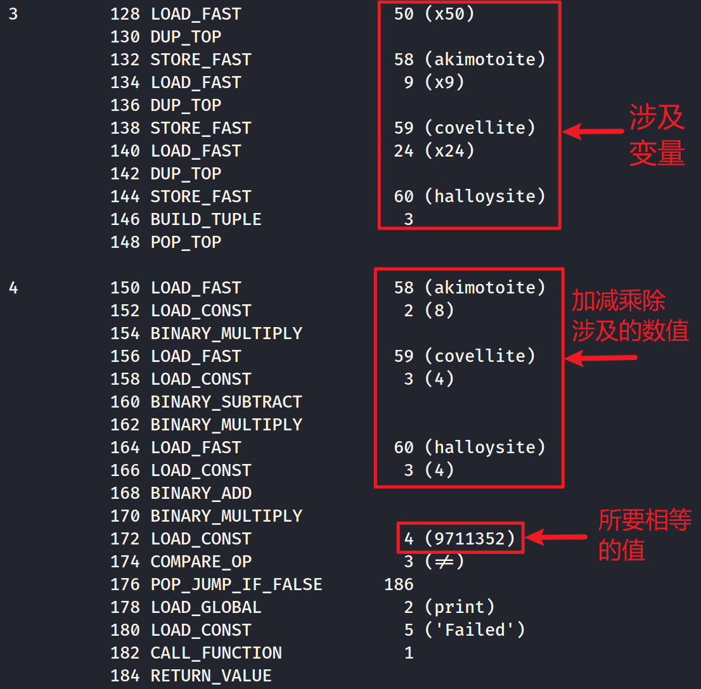
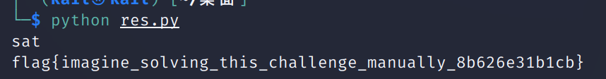

HSCTF9——eunectes-murinus↗️
过程可以说是相当艰辛了，在网上找的 wp 跟着做也能出各种问题，也是相当的菜了
ps：以下名为 chall 的文件均指 eunectes-murinus 文件，只是我重命名了一下
反编译
使用在线的 python 反编译工具编译之后明显发现存在问题

但是依稀看出来点意思：将我们输入的58个值赋给这58个变量，然后这些变量中的值都需要满足下面的方程组才行。
显然靠人力手算是不现实的，我们需要将这个程序中的所有三元一次方程整理出来交给计算机来实现，这里用到了 python 的两个库：dis 和 z3-solver
dis
dis 模块通过反汇编支持 CPython 的 bytecode 分析。通俗点来说就是将这个程序编译成了在正常 python 语言和机器码中间的一种语言状态，有点像我们同通过 ida 将一个可执行文件反编译成汇编语言的样子。
使用以下语句能够将程序 chall 的字节码储存在 chall.fun 中
1 | import dis |
我是在 kail 里的 python3 进行操作的，输入了 import chall 之后会使 chall.pyc 这个程序跑起来，并且要求你输入 flag，我们必须要按照要求输入58个字符才能进行下一步操作

这里我也不是很懂这个函数到底是怎么使用的，看了一下官方文档也试了试其他语句，没摸明白，这里先挖个坑，之后填。
接着通过文件读写，将字节码放入文本文件中
1 | w=open('文件所在路径','w') |
我们这么做的目的是通过格式整齐的反编译字节码获得我们所要解的58个三元一次方程组
z3–solver
Z3 是 Microsoft Research 的定理证明器，支持位向量、布尔值、数组、浮点数、字符串和其他数据类型。
z3-solver 的安装
1 | pip install z3-solver |
举一个解三元一次方程组的例子
1 | from z3 import * |
也不需要有多理解这个东西，掌握基本使用流程就差不多了
解题
前置工作都差不多了，现在我们有 chall 的反编译字节码的文本文件，有了解方程的工具，接下来就要从反编译字节码文本文件中提取那58个三元一次方程组
我们可以从反汇编字节码中找出和方程组的关系

上图所对应的方程组如下
可以发现方程组是符合一定的格式的，我们可以通过编写程序将方程提取并且写入文本文件中，其实原来直接的反汇编代码格式也挺整齐的，直接对反汇编代码进行操作应该也没什么问题。
下面的代码除了将方程提取之外还直接加上了 z3-solver 的解题模板，意思就是通过下面程序所得到的文本文件修改一下后缀名就可以直接通过python运行解方程获得答案了。
1 | f= open('byte.txt','rb') |
所获得的文本文件内容大致如下
1 | from z3 import * |
将文件后缀名修改成 .py 后使用python运行

踩坑
因为没搞懂 dis.dis( ) 函数的运作所以一开始不知道怎么把反汇编字节码放入到文本文件中，运行 dis.dis(chall.fun) 后，反汇编字节码的结果直接显示在了终端上面，最开始的时候选择直接从虚拟机里面复制反汇编字节码的内容到本机的 txt 里面，结果格式发生变化，调整了好几遍提取方程的程序一直报错。
后来自己摸出来原来 w.write(chall.fun) 可以直接写进去，而且复制粘贴在虚拟机中格式是没有问题的，从不停调整到发现格式有错误再到发现解决方案浪费了不少时间，也算是吸取了个教训吧。
本文作者：GhDemi
本文链接： https://ghdemi.github.io/2022/06/28/HSCTF/
文章默认使用 CC BY-NC-SA 4.0 协议进行许可，使用时请注意遵守协议。